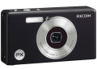

器材库 > 不可换镜头数码相机 > PX

规格总览
发布日期
2011-06-09
防水
是
影像规格
影像传感器
CCD
影像传感器尺寸
1/2.3英寸
总像素
1640万
有效像素
1600万
静态图像尺寸
4608 x 3456、4608 x 3072、3456 x 3456、4608 x 2592、3648 x 2736、2592 x 1944、2034 x 1728、1280 x 960、640 x 480
静态图像格式
JPEG
画幅比
4:3
短片尺寸
1280×720@30fps, 640×480@30fps, 320×240@30fps
短片格式
Motion-JPEG
防抖系统
图像感应器偏移方法可使图像更加稳定
镜头和对焦
镜头结构
13片/10组
焦距
5.0mm-25mm
等效35mm画幅焦距
28mm-140mm
最大光圈
f/3.9-5.4
光学变焦
5倍
数码变焦
4.8倍
最近对焦距离
3cm
对焦模式
多点自动对焦（对比自动对焦方式）/ 单点自动对焦（对比自动对焦方式）/ 脸部优先 / 自动对焦 / 连续自动对焦 / 多目标自动对焦 / 手动对焦 / 抓拍 / 无限远(带自动对焦辅助光)
AF辅助灯
有
手动对焦
支持
曝光控制
测光模式
中央重点测光, 多分区评价测光, 点测光
曝光模式
P（程序自动曝光）
快门速度
8～ 1/2000秒
曝光补偿
±2EV以1/3EV级调整
ISO感光度
100, 200, 400, 800, 1600, 3200, 自动
白平衡
多云, 白炽灯, 自动, 手动, 白平衡包围
自拍
自定义, 10秒, 2秒
拍摄模式
自动拍摄模式/场景自动模式/动态范围双拍模式/连拍模式/场景模式(肖像/运动/宠物/夜间肖像/夜景/微型化/远景/高感光度/高对比度黑白/宁静模式/微距变焦/文字模式/扭斜校正模式)/我的设置模式/影片模式
闪光灯
内置闪光灯
固定
闪光模式
自动, 减轻/消除红眼, 强制闪光, 禁止闪光
闪光补偿
±2EV以1/3EV级调整
取景规格
LCD类型
彩色TFT LCD
LCD尺寸
2.7英寸
LCD像素
23万
文件输入/输出
内置存储容量
40MB
存储卡
SD/SDHC
数据接口
USB2.0
视频/音频接口
AV 输出, Micro HDMI 输出
电源
电池
充电电池：DB-100
续航能力
可拍摄约300张
外接电源
交流电适配器AC-U1（可选）
外观
颜色
银色, 黑色, 绿色
尺寸
100×55×21.3mm
重量
100g
其它
工作温度
0-40℃
该产品暂无存档的网友点评
产品图 / 样片
评测 / 相关文章
- 详细内容 （存档）
- 理光三防相机PX试用报告 （存档）
- ［资讯］理光PX 最新固件V.1.10 （存档）
相关文章
- ［资讯］理光PX 最新固件V.1.10 （存档）
- ［试用］理光三防相机PX试用报告 （存档）
- ［资讯］理光PX （存档）